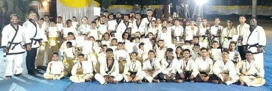
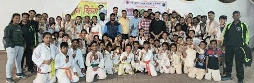

Karate for adults
Shotokan karate. Physical conditioning.
A practice with purpose.
Free regular karate training in Mumbai.

What you will practise
Develop your karate, build physical capacity and make time for focused practice. Training combines technique, conditioning, meditation and responsible self-defence.
Explore the training benefitsAdvanced Shotokan karate training
Develop precision, controlled movement and a deeper understanding of Shotokan technique. Discuss your experience with the instructor to find the right level.
Basic to extreme physical fitness training
Progress from foundational conditioning to demanding workouts. Intensity should match your current fitness, experience and recovery—not pressure to push beyond safe limits.
Weight loss and weight gain
CrossFit-style functional workouts support individual fitness and body-composition goals. Training should be paired with appropriate nutrition and recovery; results vary.
Karate meditation training
Make space for breathing, attention and composure alongside physical practice.
Street-safety and self-defence training
Street-fighting situations are approached through awareness, de-escalation, escape and controlled self-defence practice. The aim is personal safety—not starting or escalating fights.
Belt gradation exams every 6 months
Consistent training.
Clear preparation.
Progress through assessment.

Develop technique at your pace
- Body fitness and health
- Develop strength, stamina and coordination through regular physical activity.
- Personality and self-presentation
- Work on confidence, posture and the way you carry yourself.
- Mental stability and composure
- Focused practice and meditation can support calmness and emotional well-being.
- Weight management
- Build an active routine that can support managing excess weight, alongside nutrition, rest and individual guidance.
- A happier, active lifestyle
- Make room for purposeful movement, shared practice and personal goals.
Benefits are training goals, not guaranteed outcomes. Karate is not a substitute for mental-health care or medical treatment. If you have a health condition or injury, seek appropriate advice before intense exercise.
Training together
Different stages. One practice.
Photographs supplied by the academy.



Archive photographs include mixed-age groups. Event names, dates and results have not been supplied; no specific competition achievement is claimed here.
Enquire about adult training
Tell us about your experience and training goals. Confirm a suitable adult batch, class timing and meeting point before attending.
Enquire for adult trainingThis preview creates a local enquiry draft only. No message is sent and no class is booked.
Do I need advanced karate experience?
The programme includes advanced Shotokan training and conditioning from basic levels. Speak with the instructor about your experience before choosing a batch or intensity.
When are adult belt exams held?
Adult belt gradation exams are held every 6 months. Confirm the next date, syllabus and readiness requirements with the academy.
Can I train for weight loss or weight gain?
Discuss your goals and any limitations with the instructor. Functional conditioning can support a plan, but weight change also depends on nutrition, recovery and individual factors. No specific weight result or timeline is promised.
Where can I train, and are there fees?
Academy centres are Ganesh Vidyamandir School, Dharavi, and Pratiksha Nagar, Mumbai. Regular karate training is free. Confirm adult-batch availability at your preferred centre, session times and any equipment, examination or event requirements separately.